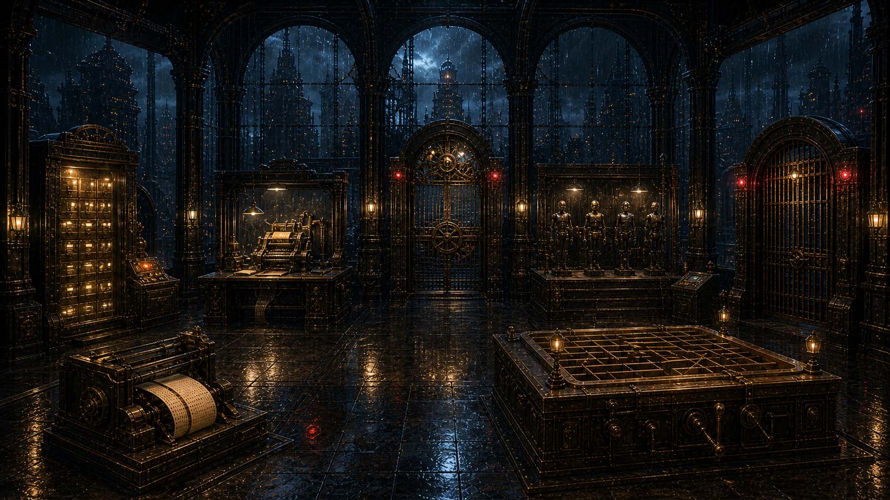
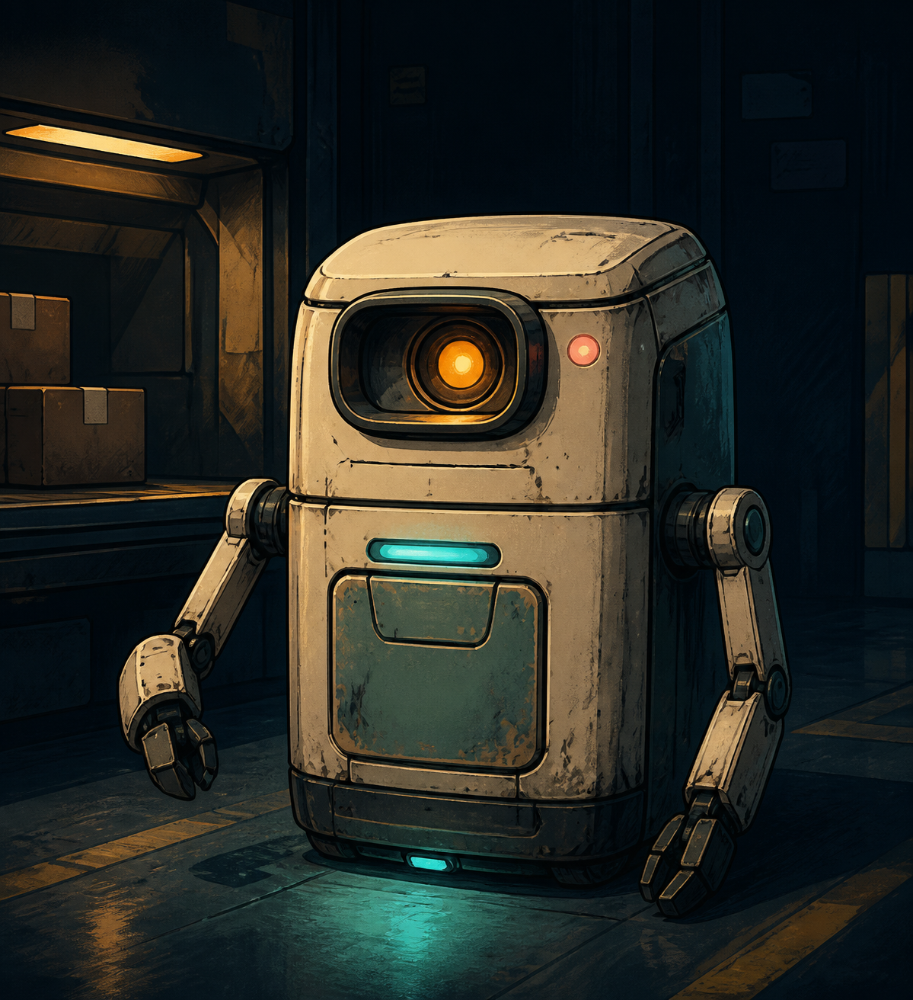

雨夜调查局 · 第 07 案
AI行为调查局
模仿学校
它把每一页教材都背进了身体。
于是事实一更新，校规一变化，它就再也分不清什么必须服从。
查封混装课表
→
查看回声档案
← 返回主页
返回案件目录
CASE
07
不是每一页教材，都应该背进身体
A
模仿学校
AI行为调查局 · CASE 07
调查进度
0 / 5
返回主页
案件目录
?
◇
回声档案

01
混装课表机
02
变动档案柜
03
临摹课堂
04
试错沙盘
05
校规闸门
06
结业门
回声网络节点 · ABI-ECHO-00/07
市政模仿学校 · 封存训练大厅

回声七号
×